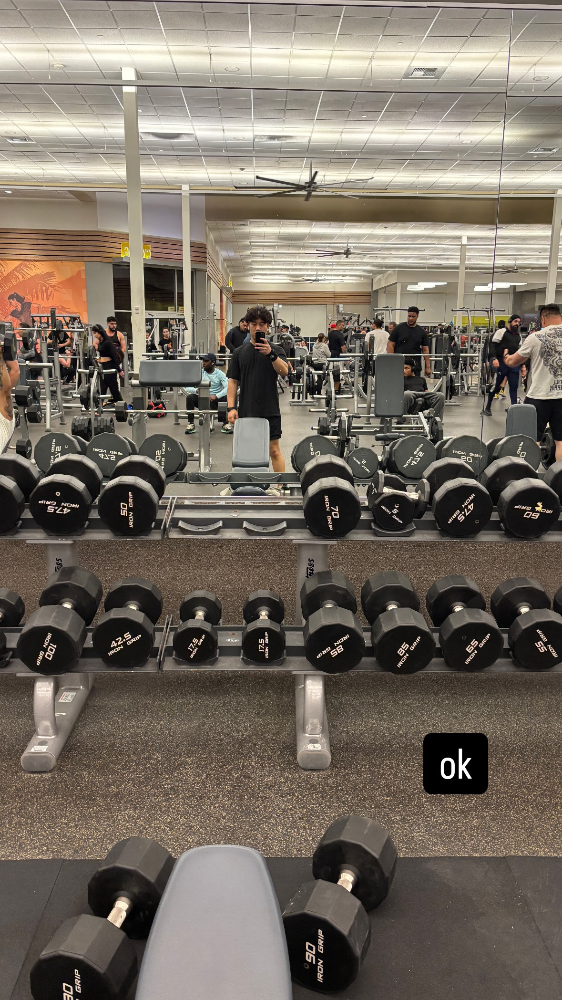
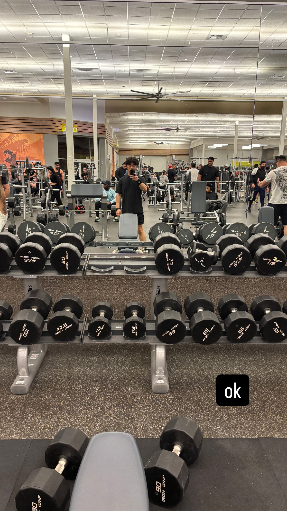
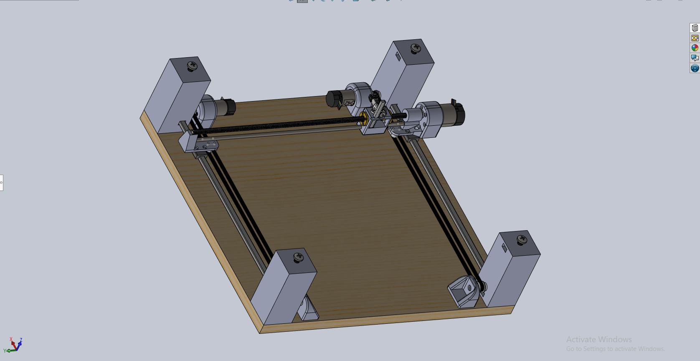
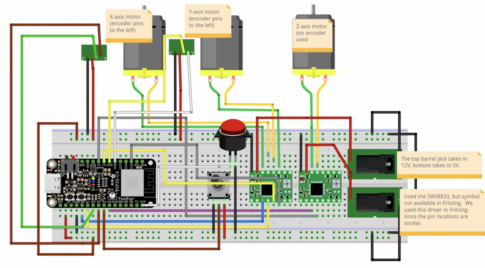
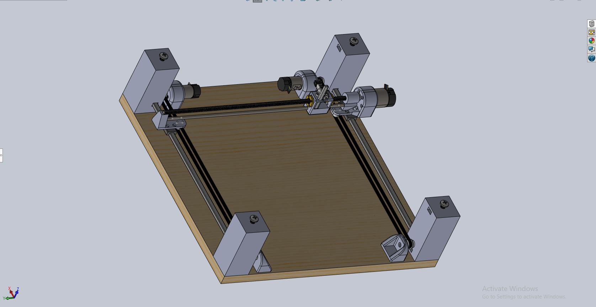
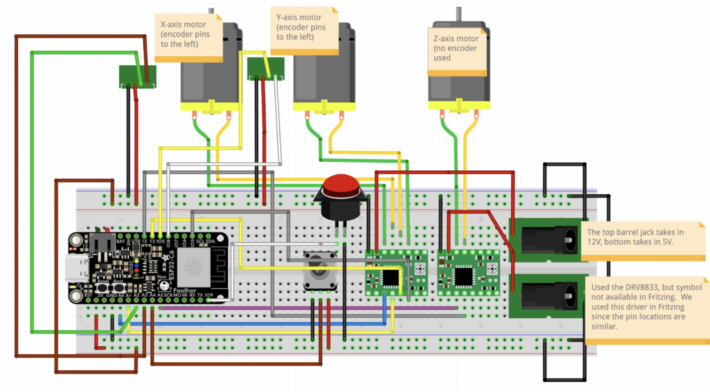

👋 About Me
 

I'm Andrew Phung, a senior at UC Berkeley studying Mechanical Engineering with a minor in EECS. I'm passionate about building systems that span hardware, firmware, and software. I like taking ideas from a sketch on a whiteboard to something that actually moves, measures, or responds in the real world—designing the mechanisms, wiring up the electronics, writing the embedded code, and shaping the user experience on top.
Because I've worked across the full stack—from CAD and manufacturing constraints to sensor integration, motor control, data pipelines, and front-end interfaces—I tend to think in terms of complete systems instead of isolated parts. I care about things that are technically solid and feel thoughtful and intuitive to use. Outside of school, I'm either at the gym, tinkering with new builds, going on an adventure, or reading a book. This portfolio is a snapshot of what I've been learning and some of the projects I've built along the way.

 


